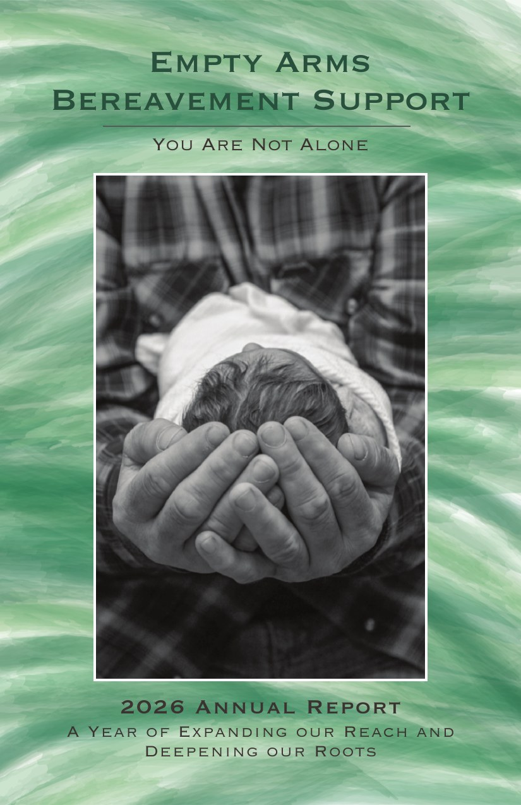

The Report
Empty Arms Annual Report 2026
I was the design and cartography lead for Empty Arms Bereavement Support’s 2026 annual report, A Year of Expanding our Reach and Deepening our Roots. Empty Arms supports families whose babies have died during pregnancy or shortly after birth, through support groups, hospital companioning, and education for the nurses and providers who care for them.
I designed the report’s cover and page templates and made its maps, which show the communities Empty Arms serves and how that reach has grown. The full 24-page report is embedded here.